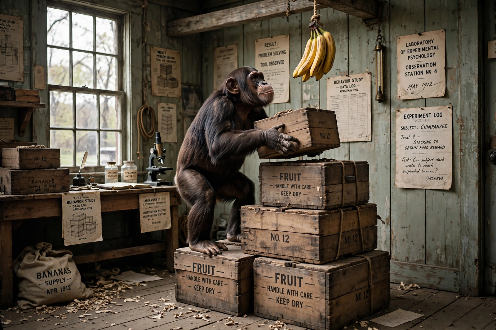

Comparative psychology
| Comparative psychology | |
|---|---|
 | |
| Field | Psychology, ethology, animal cognition |
| Subject | Behaviour and mental processes of non-human animals, compared across species and with humans |
Comparative psychology is the scientific study of the behaviour and mental processes of non-human animals, especially as they relate to the phylogenetic history, adaptive significance and development of behaviour. It compares behaviour and cognition across species, and between animals and humans, in order to understand the evolution of mind and behaviour.
History
The field has roots in the work of Charles Darwin, whose The Expression of the Emotions in Man and Animals (1872) argued for continuity between human and animal minds. George Romanes collected anecdotal reports of animal intelligence, while C. Lloyd Morgan responded with "Morgan's canon" (1894), urging that behaviour not be explained by higher mental faculties if it can be explained by lower ones.
In the early 20th century, behaviourism — led by John B. Watson and B. F. Skinner — dominated American comparative psychology, emphasising controlled laboratory experiments on learning in a small number of species, particularly rats and pigeons. In Europe, by contrast, ethologists such as Konrad Lorenz, Niko Tinbergen and Karl von Frisch studied animals in natural settings, emphasising instinct and the evolution of behaviour; the two traditions were partly reconciled in the later 20th century.
The Gestalt psychologist Wolfgang Köhler's studies of insight learning in chimpanzees on Tenerife (1913–1920) were a landmark in the study of animal problem-solving. From the 1960s onward, the "cognitive revolution" and the growth of primatology revived interest in animal minds, leading to the modern field of animal cognition.
Topics
- Learning and conditioning, including classical and operant conditioning
- Perception, memory and categorisation
- Communication, including the waggle dance of honey bees and alarm calls of vervet monkeys
- Social behaviour, cooperation, and theory of mind
- Language-like abilities, famously studied in the grey parrot Alex
- Tool use, innovation and culture in animals
- Consciousness and sentience, addressed by the Cambridge Declaration on Consciousness (2012)
Methods
Comparative psychologists use laboratory experiments, field observations, and comparative methods that map behavioural traits onto phylogenetic trees. A persistent methodological concern is anthropomorphism — attributing human-like mental states to animals without evidence — balanced against what Frans de Waal called "anthropodenial", the refusal to recognise continuities between human and animal minds.
Species studied
Historically the field concentrated on a narrow range of laboratory species, but modern comparative psychology studies a wide diversity of taxa, from corvids such as the western scrub-jay, used in research on episodic-like memory, to cephalopods, fish and insects.